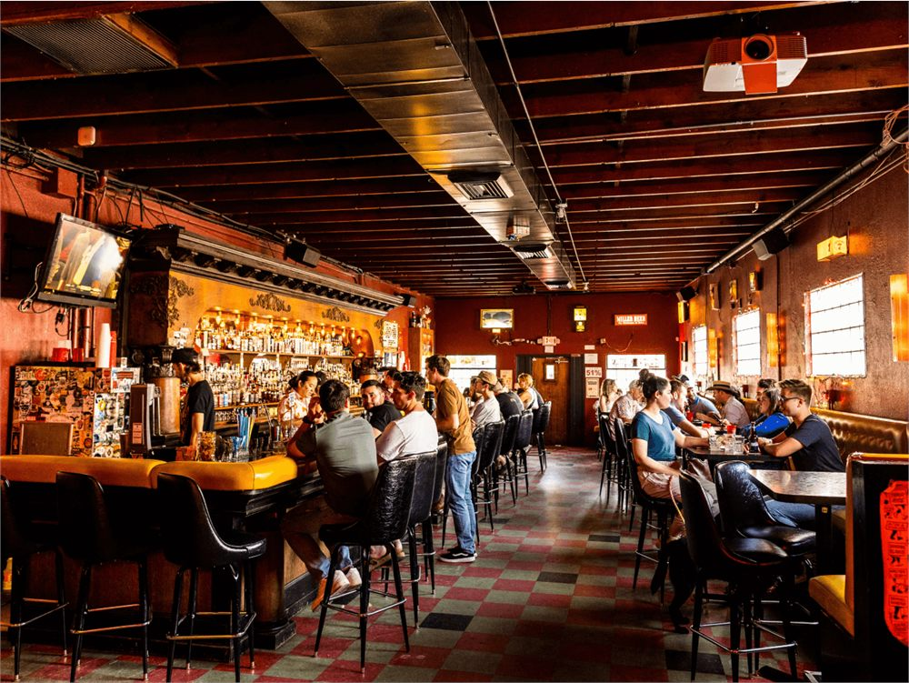

Nickel City
An East Side neighborhood bar with cocktails and a relaxed atmosphere.
1133 E 11th St, Austin, TX 78702, United States
The destination edit
Nickel City
1133 E 11th St, Austin, TX 78702, United States
Nickel City wants to believe it’s a dive bar, and at one point it almost was. But the servers at this East Side spot are too friendly, the cocktails are too developed, and the whiskey selection is too extensive. It’s one of our favorite bars in Austin, toeing the line between just about every category a bar can fall into. There’s also a great food trailer out back, Delray Cafe, serving up some of the best burgers and wings in town.